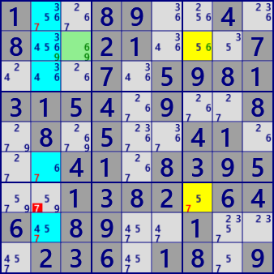

ALS DeathBlossom(basic)
⇒ ALS Death Blossom(Enhanced)
DeathBlossom is an analysis algorithm based on the arrangement of ALS with a mysterious name.
Show image of DeathBlossom
A cell(axis cell) has n candidate digits(x, y,...),
and each digit is connected with n ALSs and a strong link(RCC between cells and ALS).
Also assume that n ALSs have a common digit z different from RCC.
At this time, if z is outside the ALS and this covers all z in ALS, z outside ALS can be excluded.
If the digit z outside the ALS is true,
then all the ALSs become LockedSet and the candidate digits of the axis cells disappear.
ALS has no overlap (left figure) and overlap allowance (right figure).

○ALS DeathBlossom sample:  ALS Death Blossom
Stem : r2c3 #69
-#6-ALS1 : r27c7 #567
-#9-ALS2 : r12368c2 #345679
eliminated : r7c2 #7
ALS Death Blossom [overlap]
Stem : r1c7 #37
-#7-ALS1 : r2c459 #1347
-#3-ALS2 : r234c9 #1347
eliminated : r4c5 #4
...8...4....21...7...7.5981315..9..8.8....4....41.83.5..1.82.646.8...1...236.18..
..2956.485.6....9.4...7.5...538...1.2.......6.1...582...1.8...2.9....1.582.4316..
ALS DeathBlossom program
DeathBlossom analysis algorithm uses a cell-ALS link.
DeathBlossom Analysis is performed in the following procedure.
- Generate ALS and cell link.
- Set size (sz=2~)
- Select cells with sz element and use them as axis cells.
- Select sz ALSs to connect with axis cells.
- Check that the RCC of the selected ALS group covers the elements of the axis cell as a whole, and that all of the ALS groups have a common digit.
- Choose the digit of focused z from common digits in the ALS group.
- Find z that is outside the ALS group and covers all the focused digits in the ALS group. z outside the ALS group can be excluded.
public partial class ALSTechGen: AnalyzerBaseV2{
public bool ALS_DeathBlossom(){
ALSMan.ALS_Search(1);
if( ALSMan.ALSLst==null || ALSMan.ALSLst.Count<=2 ) return false;
ALSMan.Create_Cell2ALS_Link();
for( int sz=2; sz<=4; sz++ ){//Size 4 and over ALS DeathBlossom was not found ?
if( _ALS_DeathBlossomSub(sz) ) return true;
}
return false;
}
private bool _ALS_DeathBlossomSub( int sz ){
foreach( var SC in pBDL.Where(p=>p.FreeBC==sz) ){ //Stem Cell
if(AnMan.CheckTimeOut()) return false;
List<LinkCellAls> LinkCeAlsLst=ALSMan.LinkCeAlsLst[SC.rc];
if( LinkCeAlsLst==null || LinkCeAlsLst.Count<sz ) continue;
int nxt=0, PFreeB=SC.FreeB;
var cmb=new Combination(LinkCeAlsLst.Count,sz);
while(cmb.Successor(nxt)){
int FreeB=SC.FreeB, AFreeB=0x1FF;
for( int k=0; k<sz; k++ ){
nxt=k;
var LK=LinkCeAlsLst[cmb.Cmb[k]]; //Link[cell-ALS]
if( (FreeB&(1<<LK.nRCC))==0 ) goto LNxtCmb;
FreeB = FreeB.BitReset(LK.nRCC);
AFreeB &= LK.ALS.FreeB;
}
if( FreeB!=0 || AFreeB==0 ) continue;
AFreeB = AFreeB.DifSet(SC.FreeB);
foreach( var no in AFreeB.IEGet_BtoNo() ){
int noB=(1<<no);
Bit81 Ez=new Bit81();
for( int k=0; k<sz; k++ ){
var ALS=LinkCeAlsLst[cmb.Cmb[k]].ALS;
var UClst=ALS.UCellLst;
foreach( var P in UClst.Where(p=>(p.FreeB&noB)>0) ) Ez.BPSet(P.rc);
}
foreach( var P in pBDL.Where(p=>(p.FreeB&noB)>0) ){
if( (Ez-ConnectedCells[P.rc]).IsZero() ){ P.CancelB=noB; SolCode=2; }
}
if(SolCode<1) continue;
.
. (Solution report code)
.
return true;
}
LNxtCmb:
continue;
}
}
return false;
}
}